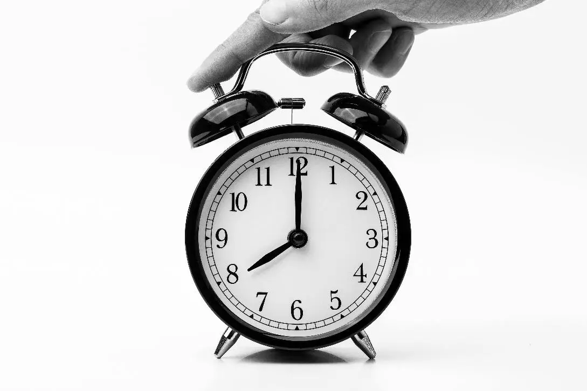

कम मनोदशा प्रबंधन
⚠️ निम्न मनोदशा (लो मूड) में तुरंत चिकित्सीय सहायता लें यदि:
- 💭 स्वयं को नुकसान पहुँचाने या आत्महत्या के विचार आना
- 😞 दिन के अधिकांश समय निराश, असहाय या बेकार महसूस करना
- 😶 परिवार, दोस्तों या सामान्य गतिविधियों से अचानक दूरी बना लेना
- 😢 लगातार उदासी या रोना, जो कुछ दिनों से अधिक समय तक बना रहे
- 😴 नींद न आना, भूख न लगना, या रोज़मर्रा के काम करने में असमर्थता
- 🧠 भ्रम, अत्यधिक चिड़चिड़ापन, या असामान्य व्यवहार
- 🚨 मृत्यु की बात करना या मरने की इच्छा व्यक्त करना
1. भावनात्मक समर्थन
मित्रों और परिवार से खुलकर बात करें। विशेषज्ञ काउंसलिंग की सहायता भी ली जा सकती है।
2. ध्यान
वीडियो 73. श्वास अभ्यास
-
डायाफ्रामेटिक ब्रीदिंग
वीडियो
- आरामदायक स्थिति में बैठें या लेट जाएं।
- एक हाथ छाती पर और दूसरा पेट पर रखें।
- नाक से सांस लें (4 सेकंड), रोकें (2 सेकंड), मुंह से छोड़ें (6 सेकंड)।
- 5–10 मिनट तक दोहराएं। यह ध्यान केंद्रित करने और चिंता कम करने में मदद करता है।
-
पर्स्ड-लिप ब्रीदिंग
वीडियो
- नाक से सांस लें (2 सेकंड), होंठों को सिकोड़ें, धीरे-धीरे बाहर छोड़ें (4 सेकंड)।
- 5–10 मिनट तक दोहराएं। यह ऑक्सीजन के आदान-प्रदान को बेहतर बनाता है।
-
4-7-8 ब्रीदिंग
वीडियो
- सांस लें (4 सेकंड), रोकें (7 सेकंड), बाहर छोड़ें (8 सेकंड)। 4–8 बार दोहराएं।
- तनाव कम करता है और मन को शांत करता है।
4. रुचियों में शामिल हों
-
🎵 संगीत सुनें वीडियो
-
🌱 बागवानी करें वीडियो
-
🎨 चित्रकारी करें वीडियो
-
📓 डायरी लेखन करें वीडियो
5. शारीरिक गतिविधियाँ
-
चलना (Walking)
वीडियो
- निर्देश: अवधि: 5–10 मिनट; तीव्रता: मध्यम
- अपनी ऊर्जा के स्तर के अनुसार करें और हर 5–10 मिनट में आराम लें।
- खुद पर ज़ोर न डालें; इससे लाभ के बजाय नुकसान हो सकता है।
- लाभ: हृदय-स्वास्थ्य और सहनशक्ति में सुधार करता है।
-
पैर झुलाना (Leg Swings)
वीडियो
- निर्देश: सीधे खड़े हों और किसी स्थिर सहारे को पकड़ें।
- कोर को सक्रिय रखते हुए एक पैर को आगे-पीछे नियंत्रित तरीके से झुलाएँ।
- आवृत्ति: प्रति पैर 10–15 बार
- दोहराव: प्रत्येक पैर 3–4 बार
-
कलाई घुमाना (Wrist Circles)
वीडियो
- निर्देश: हाथ को आगे बढ़ाएँ (कंधे से नीचे) और कलाई घुमाएँ।
- आवृत्ति: 5 बार घड़ी की दिशा में, 5 बार विपरीत दिशा में
- दोहराव: प्रत्येक कलाई 2–3 बार
-
टखने घुमाना (Ankle Rotations)
वीडियो
- निर्देश: एक पैर आगे बढ़ाएँ (ज़मीन से ऊपर) और टखना घुमाएँ।
- आवृत्ति: 5 बार घड़ी की दिशा में, 5 बार विपरीत दिशा में
- दोहराव: प्रत्येक टखना 2–3 बार
-
कंधे उचकाना और घुमाना (Shoulder Shrugs and Rolls)
वीडियो
- निर्देश: सीधी पीठ के साथ बैठें या खड़े हों।
- कंधों को ऊपर उठाएँ, 3–5 सेकंड रोकें, फिर नीचे लाकर आराम दें। गोलाकार गति में करें।
- आवृत्ति: 10 बार ऊपर, 10 बार नीचे
- दोहराव: प्रत्येक कंधा 2–3 बार
-
कोहनी मोड़ना और सीधा करना (Elbow Flexion & Extension)
वीडियो
- निर्देश: कोहनी को धीरे-धीरे मोड़ें, हाथ को कंधे की ओर लाएँ, फिर हाथ को पूरी तरह सीधा करें।
- आवृत्ति: 10 बार
- दोहराव: प्रति हाथ 2–3 बार
6. योग / प्राणायाम
-
🌀 अनुलोम-विलोम प्राणायाम (बारी-बारी से नासिका श्वास)
वीडियो
कैसे करें:
- सीधी रीढ़ के साथ आराम से बैठें।
- दाएँ हाथ के अंगूठे से दाईं नासिका बंद करें।
- बाईं नासिका से धीरे-धीरे श्वास लें।
- अनामिका उंगली से बाईं नासिका बंद करें और दाईं नासिका खोलें।
- दाईं नासिका से धीरे-धीरे श्वास छोड़ें।
- दाईं नासिका से श्वास लें, उसे बंद करें और बाईं नासिका से श्वास छोड़ें।
लाभ:
- नर्वस सिस्टम को शांत करता है
- एकाग्रता और मानसिक स्पष्टता बढ़ाता है
- तनाव, चिंता और रक्तचाप को कम करता है
- मस्तिष्क के दोनों हिस्सों (बाएँ और दाएँ) को संतुलित करता है
-
🔥 कपालभाति प्राणायाम (खोपड़ी चमकाने वाली श्वास)
वीडियो
कैसे करें:
- ध्यान की आरामदायक मुद्रा में बैठें।
- गहरी श्वास लें (श्वास लेना स्वाभाविक/निष्क्रिय होता है)।
- पेट की मांसपेशियों को संकुचित करते हुए नाक से ज़ोर से श्वास छोड़ें (श्वास छोड़ना सक्रिय होता है)।
- हर श्वास छोड़ने के बाद श्वास अपने आप अंदर जाती है।
- आमतौर पर 30–60 झटकों प्रति मिनट के चक्र में किया जाता है, इसके बाद विश्राम और गहरी श्वास ली जाती है।
लाभ:
- फेफड़ों और आंतरिक अंगों को डिटॉक्स करता है
- पाचन और मेटाबॉलिज़्म को सक्रिय करता है
- रक्त संचार में सुधार करता है
- शरीर और मन को ऊर्जावान बनाता है
- नाक के मार्ग और साइनस को साफ करता है
7. पोषण सहायता
अस्वीकरण: MedPANDA के आहार संबंधी सुझाव केवल सामान्य मार्गदर्शन और सहायक देखभाल के लिए हैं। अपनी स्थिति के अनुसार डाइटीशियन/पोषण विशेषज्ञ की सलाह का पालन करें।

छोटे-छोटे अंतराल में भोजन लें। उच्च कैलोरी और प्रोटीन से भरपूर खाद्य पदार्थ शामिल करें (मेवे, पनीर, दही, अंडे, बीन्स, मटर, दाल)।
8. नींद की स्वच्छता
रोज़ाना 8 घंटे की गुणवत्तापूर्ण नींद के साथ नियमित नींद का समय बनाए रखें।

📘 नोट: यदि नीचे मूड 2 सप्ताह से अधिक समय तक बना रहता
है, तो पेशेवर मानसिक स्वास्थ्य सलाह लें।